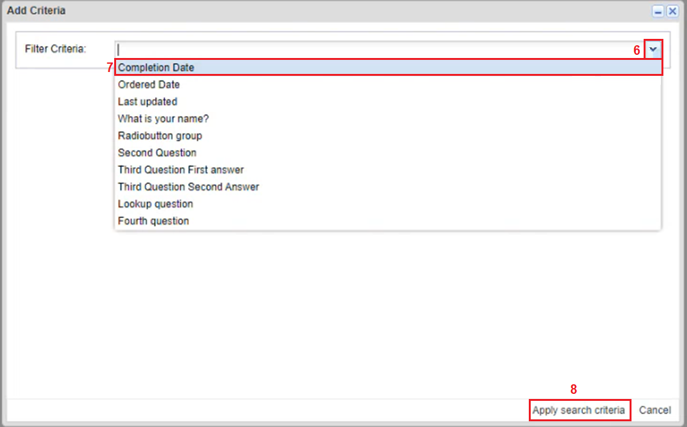
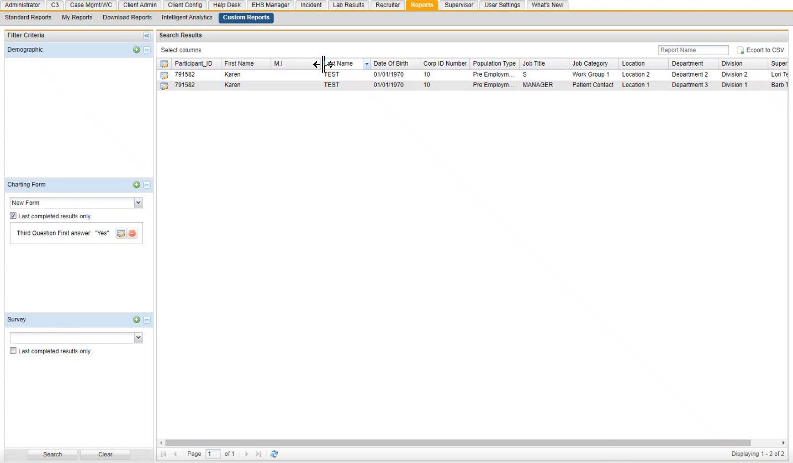
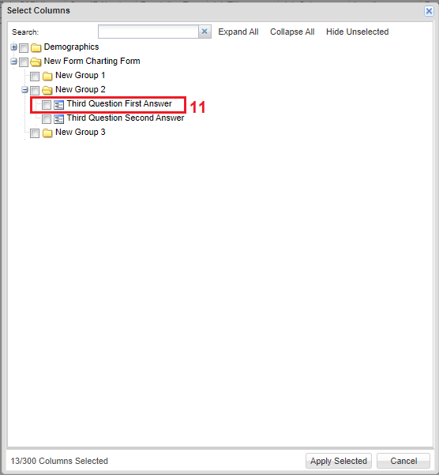
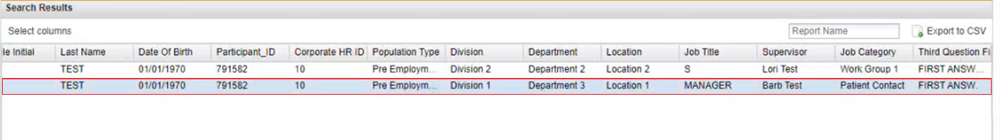

Filtering for an Answer on a Charting Form Using Custom Reports
To filter for an answer on a charting form using custom reports
-
On the top Horizontal navigation panel, click the Reports tab.
-
Click Custom Reports.
-
On the Filter Criteria window, click the dropdown textbox under Charting Form and select the form that was previously filled out.
-
Select Last completed results only.
-
Click + icon to add a Criteria.
The Add Criteria window opens.

-
Click the Filter Criteria dropdown textbox arrow.
All the questions in the charting form will be displayed in this dropdown textbox.
-
Select a question you want to run.
-
Click Apply search criteria.
-
On the Filter Criteria window, click Search.
The Test cases populate.

-
To see the question that was selected for in the results table, click the select columns.
-
On the Select Columns window, click + to expand groups.
Click the question that filters for the answer that you are looking for on the form.

The answer will now show on the Search Results table.

-
To export results to a CSV file, click Export to CSV.